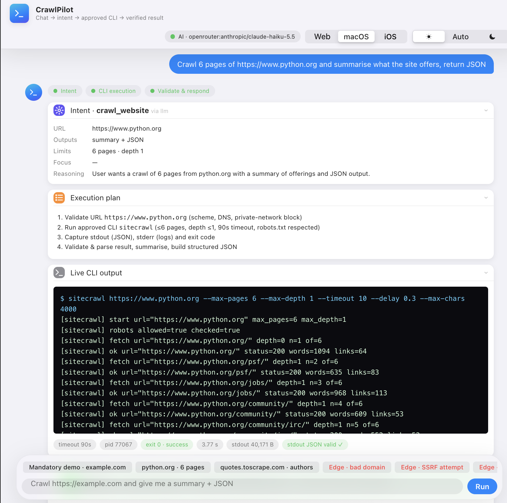
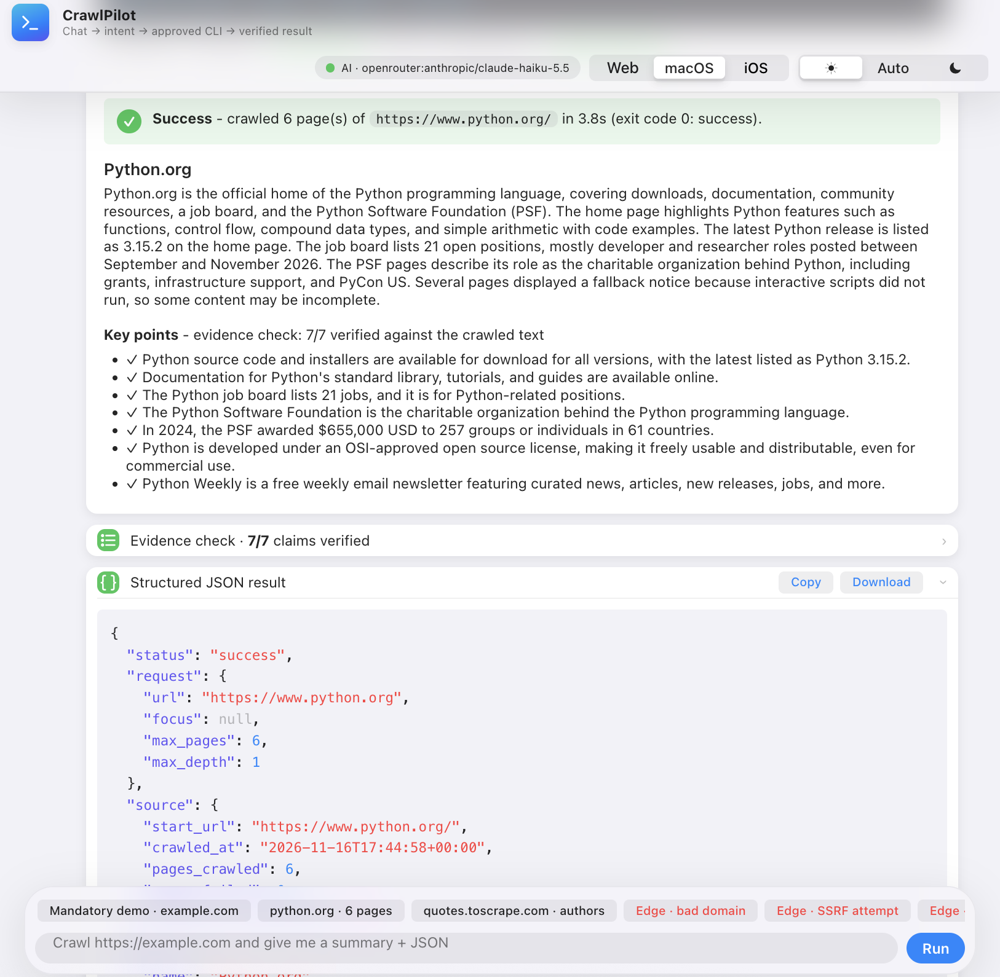

| Challenge | CLI-Driven AI Chat Execution for Complex Tasks |
| Use case | Website crawling, summarisation and structured JSON extraction |
| Repository | github.com/vineeethh/Workelate_Hackathon |
| Version | 1.0 · 16 November 2026 |
CrawlPilot turns a chat request into a controlled CLI run. The LLM only understands the request and writes the summary. A separate crawler process does the real work, and its output, logs and exit code are captured and verified.
| Component | Responsibility |
|---|---|
| frontend/index.html | Chat UI: live CLI terminal, status chips, evidence card, JSON viewer, cancel. Escapes all scraped text. |
| backend/app.py | FastAPI pipeline, SSE streaming, rate limit (10/min), cancel and health endpoints. |
| intent.py + llm.py | Natural language to typed TaskSpec via Claude Haiku 5.5 (OpenRouter), schema-validated; rules fallback. |
| security.py | URL and SSRF validation, secret redaction. |
| orchestrator.py | Tool allow-list, argv builder, subprocess runner, timeout, cancel, output capture. |
| responder.py + verify.py | Output validation, summary, evidence check, final JSON, honest status. |
| sitecrawl/cli.py | Standalone crawler: robots.txt, limits, structured extraction, JSON on stdout, logs on stderr, exit codes. |
The following sequence describes the mandatory demonstration request: "Crawl https://example.com, extract the important information, give me a summary, and return the extracted data in JSON format."
| # | Stage | Processing |
|---|---|---|
| 1 | Submit | The browser sends the message to POST /api/chat. The server assigns a job ID, applies the rate limit and opens an event stream. |
| 2 | Interpret | The intent layer asks the LLM for a schema-constrained TaskSpec and validates the result: task crawl_website, URL https://example.com, summary and JSON requested, 5 pages, depth 1. The URL is accepted only because it appears verbatim in the user's message. |
| 3 | Validate | The security module checks the scheme and port, resolves DNS and confirms that every resolved address is public. Invalid input stops here with an "Invalid input" response; nothing executes. |
| 4 | Plan | The backend streams a human-readable execution plan: validate, run the approved CLI with limits, capture outputs, validate and summarise. |
| 5 | Execute | The orchestrator builds the argument vector [python, -I, sitecrawl/cli.py, URL, --max-pages, 5, --max-depth, 1, …] and starts it with create_subprocess_exec in a new process group with a clean environment and resource limits. |
| 6 | Monitor | stderr lines (start, robots, fetch, ok, done) are redacted and streamed to the chat in real time; heartbeats keep the connection alive; the timeout and cancel signals are observed. |
| 7 | Capture | On exit the backend records the exit code, duration, stdout size and the last 40 stderr lines, and parses stdout as JSON, checking that it is a sitecrawl result. |
| 8 | Process | The responder generates the summary and key points with evidence quotes, runs the deterministic evidence check, and assembles the final JSON (status, source, site, summary, insights, verification, contact, keywords, pages, errors, execution metadata). |
| 9 | Respond | The chat shows a status banner (for example "Success – crawled 1 page in 0.7 s, exit code 0"), the summary with ✓ or ⚠ per key point, the evidence card and the JSON viewer. |
The screenshots below are from a real run of the application. The request was "Crawl 6 pages of https://www.python.org and summarise what the site offers, return JSON", run against the live site with Claude Haiku 5.5 through OpenRouter.

sitecrawl CLI process. The status chips show the process ID, timeout, exit code 0, duration (3.77 s), stdout size and the result of JSON validation.
The CLI never receives free text. The orchestrator builds an argument vector from validated, typed fields only: a normalised URL that has passed
SSRF checks, and integer limits clamped to hard maxima (25 pages, depth 3). The vector is passed directly to the operating system's process
creation call; there is no shell, so quoting, globbing, pipes and command chaining are impossible by construction. The interpreter runs
in isolated mode (-I), which ignores environment-based module paths.
setsid), so the entire process tree can be terminated with one signal.PATH, locale and certificate variables are inherited. API keys and other secrets are never passed to the child.rlimit); a private temporary working directory per job.stdout and stderr are read concurrently; stderr lines stream live to the chat, stdout is parsed as JSON after exit, and the exit code, duration and stderr tail are recorded.
| Code | Meaning | System behaviour |
|---|---|---|
| 0 | Success | All requested pages crawled; result presented as a success. |
| 3 | Partial result | Some pages failed; result presented with a "Partial result" banner and the list of failures. |
| 4 | Unreachable | Start URL could not be fetched; failure reported with the reason. |
| 5 | Blocked by robots.txt | Crawl not performed; the user is told the site disallows it. |
| 2 | Invalid input | Rejected target or arguments; valid JSON error still emitted on stdout. |
| 1 | Unexpected error | Last-resort guard; stdout still contains valid JSON describing the failure. |
| −9 | Killed | Terminated by the orchestrator due to timeout or user cancellation; never reported as success. |
90-second timeout and a Cancel button; both kill the whole process group, and the result is never reported as a success.
The security model assumes three untrusted inputs: the user's message, the model's output, and website content. Controls are layered so that no single failure leads to unsafe execution.
| Threat | Mitigation |
|---|---|
| Shell or command injection | Process created from an argument vector with create_subprocess_exec; no shell; arguments built only from validated, typed fields; interpreter in isolated mode. |
| Arbitrary tool execution | Allow-list registry; task types map to tools in code; unsupported requests are refused with an explanation. |
| Server-side request forgery | http and https only; no embedded credentials; port allow-list (80, 443, 8080, 8443); DNS resolution with rejection of private, loopback, link-local, reserved, multicast and unspecified addresses; internal hostname suffixes blocked; the crawler re-validates the final URL after every redirect. |
| Resource exhaustion | Wall-clock timeout with process-group kill; CPU and file-size rlimits; page (25), depth (3), page-size (2 MB) and stdout (8 MB) caps; rate limit of 10 requests per minute per client; robots.txt crawl-delay honoured. |
| Secret leakage | Child process receives no secrets; stderr, logs and JSON pass through redaction of key patterns and sensitive environment values; health endpoint exposes no keys; .env is git-ignored. |
| Prompt injection via websites | Content fenced as untrusted; explicit instruction to ignore embedded instructions; summarisation call has no tools; model output is schema-validated data, never executed. |
| Cross-site scripting | All scraped and model text is HTML-escaped before rendering in the browser. |
| Fabricated results | Success requires a clean exit code and valid JSON of the expected type; evidence check flags unsupported claims; failures, timeouts and cancellations are reported explicitly. |
| Responsible crawling | robots.txt respected by default (the bypass flag is not exposed to the backend); identifiable user agent; inter-request delay; same-domain scope only. |
| Layer | Technology | Rationale |
|---|---|---|
| Backend | Python 3.12, FastAPI, Uvicorn, Pydantic | Native async subprocess support, first-class streaming responses, strict schema validation. |
| Execution tool | Custom Python CLI (requests, BeautifulSoup, lxml) | Lightweight, no browser dependency, contract designed for programmatic control. |
| Frontend | HTML, CSS, JavaScript; Server-Sent Events | No build step for judges; real-time one-way streaming fits the execution-log use case. |
| UI design | applecn design system (MIT) | Consistent, accessible Apple HIG tokens; light and dark modes; platform idiom switch. |
| AI model | Claude Haiku 5.5 via OpenRouter (Anthropic API supported) | Fast, low-cost, reliable structured output; provider layer allows switching models by configuration. |
| Testing | pytest | Unit and integration tests, including real CLI runs and timeout behaviour. |
| Challenge requirement | Implementation |
|---|---|
| Chat interface with natural-language input | frontend/index.html; free-text composer, example prompts, shareable ?q= links. |
| Intent-understanding layer | intent.py and llm.py; schema-validated TaskSpec with rules fallback. |
| Backend orchestration selecting an approved CLI | orchestrator.py tool registry and task-to-tool mapping. |
| Real execution workflow | sitecrawl CLI performs live HTTP crawling and extraction. |
| Output capture (stdout, stderr, status) | Concurrent pumps, live stderr streaming, exit-code mapping, ExecutionResult. |
| Response layer with valid JSON | responder.py; round-trip validated JSON; status banner; JSON viewer. |
| Handling invalid input, failures, timeouts, inaccessible sites | Sections 6.6 and 10; explicit statuses for each case. |
| Do not pass raw text to an unrestricted shell | No shell; argument vector from typed fields. |
| Approved tools and input validation | Allow-list; security.py URL validation. |
| Least privilege and sandboxing | Clean environment, process group, rlimits, private working directory. |
| Timeouts, depth and page limits | 90 s timeout, 25 pages, depth 3, size caps, rate limit. |
| Website content treated as untrusted | Prompt fencing, no tools during summarisation, HTML escaping. |
| No secrets in output or logs | Redaction and secret-free child environment. |
| Honest error and partial status | Success only with clean exit and valid JSON; evidence check. |
At runtime, Claude Haiku 5.5 (accessed through the OpenRouter API) is used for intent interpretation and summarisation, always with schema-constrained, validated output and with a deterministic fallback. During development, Claude Code (Anthropic's AI coding assistant) was used to help with scaffolding, implementation, tests and documentation. The applecn design tokens are vendored unmodified under the MIT licence. The architecture, security design and every component have been reviewed by the author, who can explain all parts of the implementation.